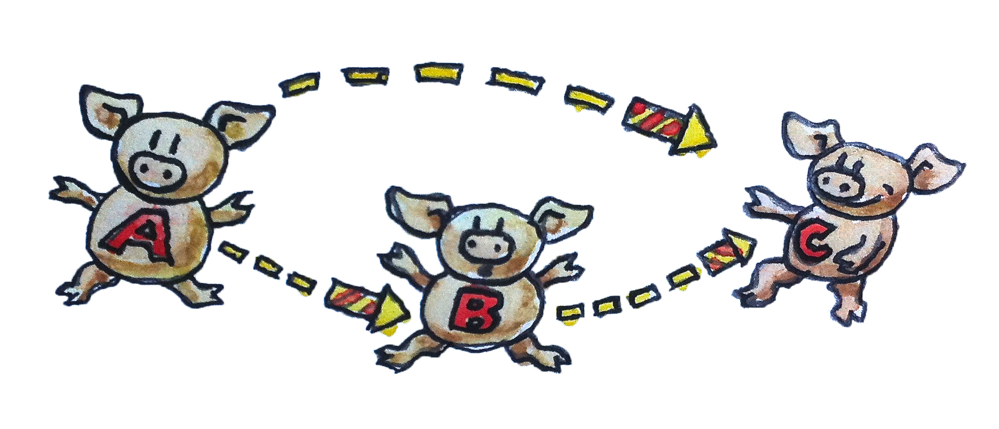

范畴是一个简单得令人难为情的概念。一个范畴由若干对象以及连接这些对象的箭头构成。因此，范畴很容易用图形表示：对象可以画成圆圈或点，而箭头……就是箭头。（为了有些变化，我偶尔也会把对象画成小猪，把箭头画成烟花。）但范畴的本质在于复合。或者如果你愿意，也可以说：复合的本质就是范畴。箭头能够复合，因此，如果有一支箭头从对象 A 指向对象 B，另有一支箭头从对象 B 指向对象 C，那么就必须存在一支从 A 指向 C 的箭头——前两支箭头的复合。

把箭头看作函数
这已经抽象得让人受不了了吗？别绝望，我们来谈些具体的东西。把箭头——它们也称为态射（morphism）——看作函数。你有一个函数 f，它接受类型 A 的参数，返回类型 B 的结果；还有一个函数 g，它接受 B，返回 C。把 f 的结果传给 g，就能将二者复合。这样，你刚刚定义了一个接受 A 并返回 C 的新函数。
数学中，函数复合写成夹在函数之间的小圆圈：g ∘ f。请注意，复合的顺序是从右到左，这会让一些人感到困惑。你也许更熟悉 Unix 中从左到右的管道写法：
lsof | grep Chrome或者 F# 中同样从左到右的尖括号 >>。但在数学和 Haskell 中，函数都从右向左复合。把 g ∘ f 读作“先 f，后 g”（g after f），会更容易理解。
让我们写一些 C 代码，把这件事说得更明确。首先有函数 f，它接受类型 A 的参数，返回类型 B 的值：
B f(A a);以及另一个函数：
C g(B b);它们的复合是：
C g_after_f(A a)
{
return g(f(a));
}这里再次出现了从右到左的复合：g(f(a))；只不过这一次是在 C 中。
我很想告诉你，C++ 标准库中有一个模板能够接受两个函数并返回它们的复合，但实际上并没有。因此我们换换口味，试一下 Haskell。下面是一个从 A 到 B 的函数声明：
f :: A -> B类似地：
g :: B -> C它们的复合是：
g . f一旦看到 Haskell 里的事情如此简单，C++ 无法表达这些直截了当的函数式概念，就多少有点令人尴尬。事实上，Haskell 允许你使用 Unicode 字符，因此复合也可以写成：
g ∘ f你甚至可以使用 Unicode 双冒号和箭头：
f ∷ A → B于是，这是我们的第一堂 Haskell 课：双冒号表示“具有……类型”。在两个类型之间插入箭头，就构造出一个函数类型；在两个函数之间插入句点（或者 Unicode 小圆圈），就将它们复合起来。
复合的性质
任何范畴中的复合都必须满足两个极其重要的性质。
-
复合满足结合律。如果有三个可以复合的态射 f、g 和 h（也就是说，它们首尾相接处的对象相符），那么复合它们时不需要括号。数学记法是：
h ∘ (g ∘ f) = (h ∘ g) ∘ f = h ∘ g ∘ f用（伪）Haskell 表示：
f :: A -> B g :: B -> C h :: C -> D h . (g . f) == (h . g) . f == h . g . f我说它是“伪”Haskell，是因为函数之间并没有定义相等性。处理函数时，结合律相当直观；但在其他范畴里，它未必同样显而易见。
-
每个对象 A 都有一支作为复合单位元的箭头。这支箭头从该对象出发又回到它自身。所谓复合的单位元，是指它分别与任何从 A 出发或以 A 为终点的箭头复合时，结果仍是原来的那支箭头。对象 A 的单位箭头称为 idA，即 A 上的恒等。在数学记法中，如果 f 从 A 指向 B，那么：
f ∘ idA = f并且：
idB ∘ f = f
当箭头是函数时，恒等箭头实现为恒等函数：它只把自己的参数原样返回。对每一种类型，这个实现都相同，因此该函数是全称多态的。在 C++ 中，可以把它定义为模板：
template<typename T> T id(T x) { return x; }当然，在 C++ 里事情从来不会这么简单，因为你不仅要考虑传入了什么，还要考虑怎样传入——按值、按引用、按常量引用、按移动语义，等等。
在 Haskell 中，恒等函数属于标准库（称为 Prelude）。它的声明和定义如下：
id :: a -> a
id x = x如你所见，在 Haskell 中写多态函数易如反掌。声明时，只需把具体类型换成类型变量。诀窍在这里：具体类型的名称总是以大写字母开头，类型变量的名称则以小写字母开头。因此，此处的 a 代表所有类型。
Haskell 的函数定义由函数名和紧随其后的形式参数组成——这里仅有一个参数 x。等号之后是函数体。这种简洁常常令初学者吃惊，但你很快就会发现它完全合乎情理。函数定义和函数调用是函数式编程的日常基本操作，因此它们的语法被压缩到了最低限度：参数列表外没有括号，参数之间也没有逗号（等我们定义多参数函数时，你会看到这一点）。
函数体永远是一个表达式——函数中没有语句。函数的结果就是这个表达式；在这里，结果仅仅是 x。
我们的第二堂 Haskell 课到此结束。
恒等条件可以写成（同样是伪 Haskell）：
f . id == f
id . f == f你也许会问：为什么有人要费心研究恒等函数——一个什么也不做的函数？不过换个角度，我们为什么要费心研究数字零呢？零是“什么都没有”的符号。古罗马人的数字系统没有零，但他们仍然修建了优秀的道路和渡槽，其中一些甚至留存至今。
当我们处理符号变量时，零或 id 这样的单位值极其有用。正因为如此，罗马人不擅长代数，而熟悉零这个概念的阿拉伯人与波斯人却擅长。因此，当恒等函数作为高阶函数的参数或返回值时，它会变得非常方便。高阶函数使函数的符号操作成为可能；它们构成了函数的代数。
总结一下：范畴由对象和箭头（态射）构成。箭头能够复合，而且复合满足结合律。每个对象都有一支恒等箭头，在复合中充当单位元。
复合是编程的本质
函数式程序员处理问题的方式颇为独特。他们一开始会提出一些很有禅意的问题。比如，设计交互式程序时，他们会问：“什么是交互？”实现康威生命游戏时，他们大概会思考生命的意义。本着这种精神，我要问：“什么是编程？”在最基础的层面上，编程就是告诉计算机该做什么：“取出内存地址 x 中的内容，把它加到 EAX 寄存器的内容上。”但即便我们用汇编语言编程，交给计算机的指令仍然表达着某种更有意义的东西。我们是在解决一个并不平凡的问题——如果它很平凡，也就不需要计算机帮忙了。那么，我们怎样解决问题？我们把大问题分解成小问题。如果小问题仍然太大，就继续分解，如此反复。最后，我们写出解决所有小问题的代码。接下来便来到编程的本质：把这些代码片段复合起来，形成更大问题的解。如果无法把碎片重新拼回去，分解也就毫无意义。
这种层层分解、再层层复合的过程并非计算机强加给我们的，而是人类心智局限的反映。我们的大脑一次只能处理少量概念。心理学中被引用最多的论文之一《神奇的数字 7±2》提出，我们的头脑一次只能保留 7±2 个信息“组块”。我们对人类短期记忆的具体认识或许还在变化，但可以确定的是，它很有限。归根到底，我们无法处理对象的混汤，也无法处理代码的意大利面。我们需要结构，并不是因为结构良好的程序看上去赏心悦目，而是因为缺少结构时，大脑无法高效处理它们。我们常说某段代码优雅或美丽，但真正的意思是：有限的人类心智能够轻松处理它。优雅的代码创造出大小恰当、数量也恰当的组块，让我们的心智消化系统能够吸收。
那么，用于复合程序的合适组块是什么？它们的表面积增长必须慢于体积增长。（我喜欢这个比喻，因为在直觉上，几何物体的表面积随尺寸的平方增长，而体积随尺寸的立方增长，因此前者更慢。）表面积是复合组块时需要知道的信息；体积则是实现组块时需要知道的信息。核心思想是：一个组块实现之后，我们就可以忘掉实现细节，转而关注它怎样与其他组块交互。在面向对象编程中，表面是对象的类声明或抽象接口；在函数式编程中，表面是函数声明。（这里稍作了简化，但要点如此。）
范畴论在这一点上走到了极端：它主动劝阻我们窥视对象内部。范畴论中的对象是抽象而模糊的实体。关于一个对象，你所能知道的只有它怎样关联其他对象——它怎样通过箭头与它们相连。这正是互联网搜索引擎分析入站和出站链接、据此排列网站名次的方式（当然，它们偶尔也会作弊）。在面向对象编程中，理想化的对象只能通过抽象接口被看见——只有表面，没有体积——而方法扮演箭头的角色。一旦你必须钻进对象的实现，才能理解怎样把它与其他对象组合起来，你就已经失去了这种编程范式的优势。
习题
- 在你最喜欢的语言中，尽你所能实现恒等函数。（如果你最喜欢的语言恰好是 Haskell，就用第二喜欢的语言。）
点击展开参考答案
fun <A> identity(value: A): A = value类型参数
A保证输入、输出类型相同；函数不观察也不改变值。 - 在你最喜欢的语言中实现复合函数。它接受两个函数作为参数，并返回由二者复合而成的函数。
点击展开参考答案
fun <A, B, C> compose( g: (B) -> C, f: (A) -> B ): (A) -> C = { x -> g(f(x)) }参数顺序对应数学记号
g ∘ f：先执行f，再执行g。 - 编写一个程序，尝试检验你的复合函数是否遵守恒等律。
点击展开参考答案
val f: (Int) -> String = { it.toString() } check(compose(::identity, f)(42) == f(42)) check(compose(f, ::identity)(42) == f(42))这分别检验左恒等律
id ∘ f = f与右恒等律f ∘ id = f。有限测试不能证明定律，但能检查实现。 - 万维网在某种意义上是范畴吗？链接是态射吗？
点击展开参考答案
可以，但不能只把“单个链接”当作全部态射。把网页作为对象，把有限链接路径作为态射；空路径是恒等态射，路径拼接是复合，并且满足结合律。若只保留单个链接，两条链接复合后未必还是单个链接，因而通常不成范畴。
- 如果把人看作对象，把友谊看作态射，Facebook 是范畴吗？
点击展开参考答案
通常不是。友谊关系虽然可看作双向，并且每个人可视为与自己有关联，但它不具传递性：A 是 B 的朋友、B 是 C 的朋友，并不意味着存在 A 到 C 的“友谊态射”。若把态射改为朋友链，才可以构成自由范畴。
- 有向图在什么情况下构成范畴？
点击展开参考答案
当每个节点都有恒等环，并且任意首尾相接的边都有定义好的复合边，同时复合满足结合律与左右恒等律时，它就是范畴。任意有向图都能通过加入所有有限路径（包括空路径）生成自由范畴。